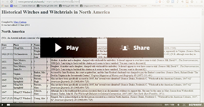
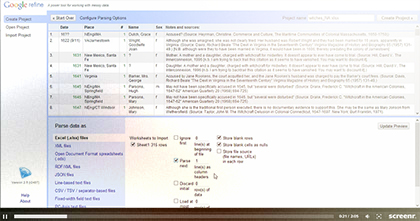
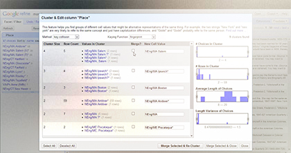

Monster Mashup: Night of the Living Data!
This online presentation will guide you through using OpenRefine to work with messy data on witch trials across continents. It's a minimal introduction for sure, built especially for the illustrious MONSTER MASHUP workshop at the Center for Science and Social Science Information, so feel free to get in touch if you want to learn more than what's presented here.
First, get OpenRefine!
If you don't have Open Refine, you'll have to download it. It's a desktop application available for Mac, Linux, and Windows, and you can get it here: openrefine.org.
Next, find data.
We need to find data to work with. In my case, I need to find data on witch trials. Let's watch an important video before we search.
If I'm looking for historical data that's niche like this, I start with creative google searches. Part of my job is helping people find data to use in their projects. If you need that kind of assistance, feel free to email me. I also have some short guides on how to find data, and what to think about when you start searching.
It looks like Marc Carlson of the University of Tulsa has compiled some great tables for North America, Europe, England, and more. Let's work with these!
Wait, how do we get HTML tables into OpenRefine?
The great tables I found are just in HTML, though. No excel spreadsheets or anything in sight. How do we ingest HTML tables into OpenRefine? Well, there are a lot of ways. The way I like to do it is to use Excel's built-in features to import tabular data from the web into Excel format. It works great. Here's a short video I made that will show you how to do it (1:00):
Launching OpenRefine & exploring your data
Launch OpenRefine and start exploring your data. You can use facets to explore large data sets easily, and export interesting segments of it into almost any format you want. This screencast will show you how to ingest the data and a little bit about using the facets to quickly scan data for interesting bits (2:05):
Using facets and clustering to merge and clean up data
Now that you've seen facets, this example video demonstrates making facets to arrange and merge data fields so they're more useful, accurate, or in a format you'd prefer to work with. You can also flag items for follow-up if they look like they warrant further investigation. This video shows you a little bit about that:
Congratulations!
Now you've started using OpenRefine to fix all your messy data. Why don't you take a break and listen to your favorite witchy song?
Further inquiry into the matter
For more advanced techniques like adding new columns based on URLs, and reconciliation using Freebase, check out the official tutorial videos.